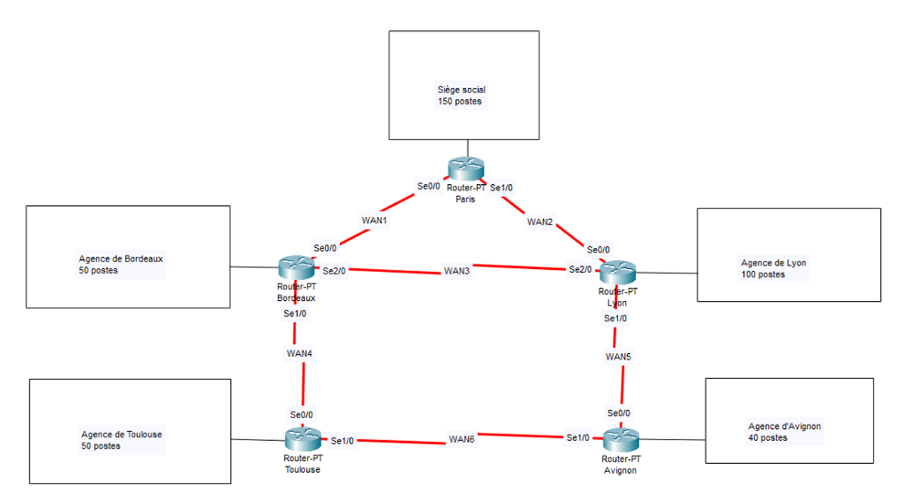
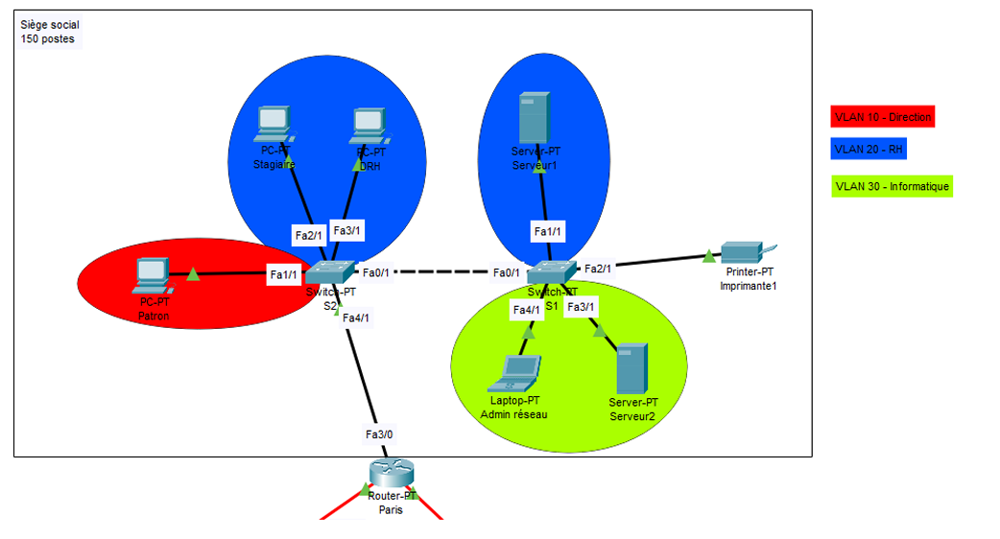

Projets réalisés dans le cadre de mon BTS SIO SISR
Mise en place d’un réseau d’entreprise multi-sites reliant un siège et quatre agences. Objectifs : segmentation par métiers via VLAN, routage inter-sites, contrôle des flux par ACL, et documentation (schémas + tables d’adressage). Le schéma de topologie ci-dessous présente l’architecture WAN.


Adressage privé IPv4, sous-réseaux par site puis par VLAN au siège.
Mise en place d’un routage dynamique (RIPv2) pour propager automatiquement les routes.